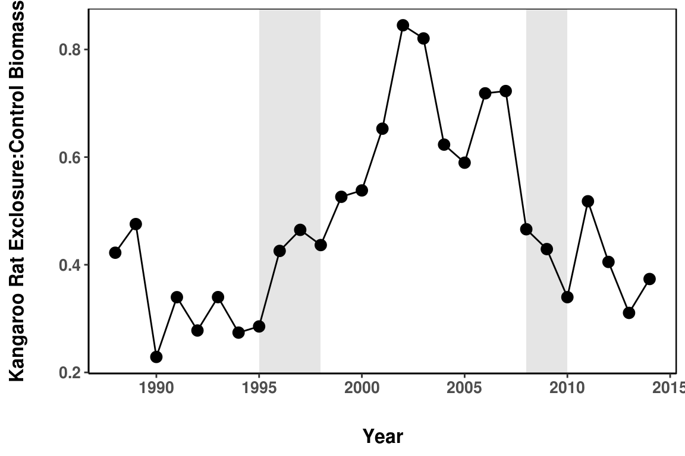

vignettes/portal_researcher_examples.Rmd
portal_researcher_examples.RmdThe portalr package started out as a series of scripts used by Portal researchers to quickly and consistently summarize the Portal data. It has developed from there into a formalized package, dealing with all the quirky data manipulation under the hood. Now, the researchers who are currently collecting data at Portal have started actively using the package in their own work. Some examples of how we are using the package are included below.
One thing we can do with the Portal rodent data is look at the ratio of biomass between the control plots and the kangaroo rat exclosure plots and how it has changed through time.
Because we are going to compare biomass between plot types, we need to know the biomass on each plot. To achieve this, we can set level = "plot"
biomass_data <- portalr::get_rodent_data(path = "repo",
level = "plot",
output = "biomass",
time = "date")Note that the path argument in the get_rodent_data function has been set to “repo.” While you can choose the download all of the Portal data onto your local computer and then load the data into R, you can also get the data directly from the GitHub repository by setting path = "repo" as we’ve done here.
The data structure will look like this, with columns for the date, treatment, plot number, and each species:
| censusdate | treatment | plot | BA | DM | DO | DS | NA | OL | OT | |
|---|---|---|---|---|---|---|---|---|---|---|
| 11203 | 2017-10-21 | removal | 1 | 0 | 42 | 0 | 0 | 0 | 0 | 52 |
| 11204 | 2017-10-21 | removal | 9 | 0 | 0 | 0 | 0 | 0 | 0 | 27 |
| 11205 | 2017-10-21 | removal | 10 | 0 | 0 | 0 | 0 | 0 | 0 | 0 |
| 11206 | 2017-10-21 | removal | 12 | 0 | 82 | 0 | 0 | 204 | 0 | 43 |
| 11207 | 2017-10-21 | removal | 16 | 0 | 101 | 0 | 0 | 0 | 0 | 0 |
| 11208 | 2017-10-21 | removal | 23 | 0 | 0 | 0 | 0 | 0 | 0 | 0 |
Let’s select only the rows we want:
Based on information about the plot treatment switches that can be found in this Readme file in the PortalData repo, we want to select censuses in the years 1988-2014; to make the data a bit easier to work with, we can also split the date column into three separate columns and then filter on the year column.
Since we are comparing control plots and exclosure plots, we can also filter for only those treatment types.
biomass_data <- biomass_data %>%
# split the date column into year, month, and day
separate(col = censusdate, into = c("year", "month", "day"), sep = "-") %>%
filter(year >= 1988 & year < 2015, # filter by year
treatment == "control" | treatment == "exclosure") # filter by treatment typeWe can get the total biomass for each plot per census by summing the mass of all the species per row. From there, we will sum by year for each treatment type. Then, we can create the exclosure:control ratio.
# compute total biomass per year and treatment
biomass_total <- biomass_data %>%
gather(species, biomass, BA:SO) %>%
group_by(year, treatment) %>%
summarize(totals = sum(biomass, na.rm = TRUE))
# make a column with the exclosure:control ratio
biomass_ratio <- biomass_total %>%
spread(treatment, totals) %>%
mutate(EX_to_CO_ratio = exclosure / control) %>%
ungroup()We can finally plot the data!

Before the mid-1990s, biomass on the kangaroo rat exclosures never went above 50% of the biomass found in the control plots; the small granivores just couldn’t keep up with the larger kangaroo rats. When a larger pocket mouse, Chaetodipus baileyi, showed up in the system (first gray bar), they were found primarily in the kangaroo rat exclosures. This increased the biomass ratio to above 80% of that found in the control plots. As C. baileyi left the system (second gray bar), the ratio returned to similar levels as before their arrival.
While the rodent community data is the most frequently utilized data from the Portal Project, we can also use portalr to get plant or ant data from the site. We’ve been running some multivariate statistics on plant composition in the plots and looking for differences between rodent treatment types. This is how we get the data we need to do that.
Our site has two rainy periods and, therefore, two communities of annual plants. Let’s say we want to take a look at the abundance of the winter annuals in the system, and we want to see if they differ by treatment type. We can use the get_plant_data function to get the appropriate data.
plant_data <- portalr::get_plant_data(path = 'repo', level = 'plot',
type = 'winter-annual', correct_sp = TRUE,
unknowns = FALSE, shape = 'flat',
output = 'abundance')What do some of these arguments mean? As above, path = 'repo' pulls the data directly from the online repository. level = 'plot' indicates that we want the data to be summarized at the plot level rather than across the entire site, and type = 'winter-annual' will give us only annual species that can be found in the winter months. Sometimes in the past, we have misidentified a species of plant; correct_sp = TRUE goes through the data and corrects the species name to what we now know to be the correct species. Other times, we just don’t know what a species is, so it is unknown; if we don’t want those to be included, we use unknown = FALSE. Finally, we want the abundance of each species returned. Unlike with the rodent abundance, however, we’ve asked for a flat shape, so the data structure will be in long format and look like this:
| year | season | plot | species | abundance | quads |
|---|---|---|---|---|---|
| 1981 | summer | 1 | ambr arte | 0 | 8 |
| 1981 | summer | 1 | amsi inte | 0 | 8 |
| 1981 | summer | 1 | amsi tess | 0 | 8 |
| 1981 | summer | 1 | andr occi | 0 | 8 |
| 1981 | summer | 1 | astr allo | 0 | 8 |
| 1981 | summer | 1 | astr nutt | 0 | 8 |
Wait a second! Didn’t we ask for winter annuals? So why are the first few rows all from a summer plant census?
As it turns out, while we have two annual communities of plants, some of the annuals in our system can be found in both summer AND winter. Hypothetically, someone might want to know about any and all annual plants that could be found in the winter: how many of them show up in the summer, for example?
To get the data we want–just winter annuals found only in the winter season–we just need one more quick line of code.
| year | season | plot | species | abundance | quads |
|---|---|---|---|---|---|
| 1982 | winter | 1 | ambr arte | 0 | 8 |
| 1982 | winter | 1 | amsi inte | 0 | 8 |
| 1982 | winter | 1 | amsi tess | 0 | 8 |
| 1982 | winter | 1 | andr occi | 0 | 8 |
| 1982 | winter | 1 | astr allo | 0 | 8 |
| 1982 | winter | 1 | astr nutt | 0 | 8 |
That’s more like it! Now we have the data we want to run some multivariate statistics or whatever else you might want to do with the data.